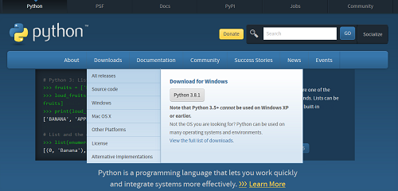
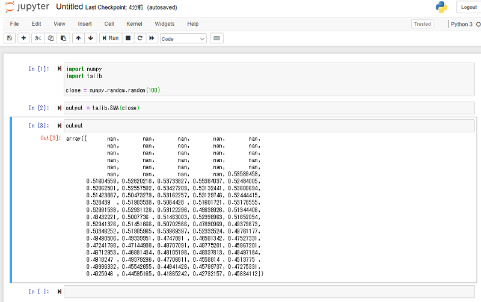

鉄は熱いうちに打て
=============================
WindowsにJupyterとTA-Libをインストールしよう¶
2019-12-21
この記事は、 fintalk Advent Calendar 2019 - Adventar の21日目の記事です。
あらすじ¶
プライベートマシンをMacからWinに変更した
fintalkでは、Jupyterを用いて分析などのハンズオンをしている
macでは、ローカルでJupyter notebookを動かして分析をしていた
winでも同じことをしたい
しばり¶
Anaconda, condaなどは使わない
環境は汚さない
反省¶
12/2に Windowsで分析したい でWindows10のUbuntu上でやろうといろいろやっていたのですが、結論から言うとUbuntu環境使っていません。
設定¶
Python3.8をインストールする¶
https://www.python.org/ でWindows用のインストーラーを取得します。
今日の時点でPython3.8.1でWindows用のインストーラーを取得します。
インストーラーでインストールします。
TA-Libをインストールする¶
http://ta-lib.org/hdr_dw.html から ta-lib-0.4.0-msvc.zip をダウンロードします。
解凍して、Cドライブの直下に ta-lib ディレクトリーをコピーします。
仮想環境にインストールする¶
適当なディレクトリで仮想環境を作ります。
$ python -m venv venv
$ . venv/bin/activate
(venv)$
pipで必要なライブラリーをインストールします
(venv)$ pip install TA-Lib
(venv)$ pip install jupyter
(venv)$ pip install pandas matplotlib
起動¶
起動します。
(venv)$ jupyter notebook
悲しいことに今日の時点ではエラーになります。Stackoverflowに解決策がのっていました。
Jupyter Notebook with Python 3.8 - NotImplementedError
venv\Lib\site-packages\tornado\platform\asyncio.py の一番下の行に以下を書き足します。
import sys
if sys.platform == 'win32':
asyncio.set_event_loop_policy(asyncio.WindowsSelectorEventLoopPolicy())
もう一回起動します。
(venv)$ jupyter notebook
起動しました。
お試し¶
試しに Function API Examples にあったサンプルを打ってみます。
動いた！
これで次回からローカルで動くJupyter Notebookを利用してfintalkに参加できそうです。